A canvas for your next idea
网页演示版 · 完整体验请使用 MCP 工具 ↗
留给你想特别指定的地方。
YOUR PROMPT
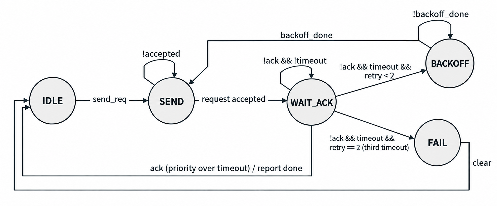
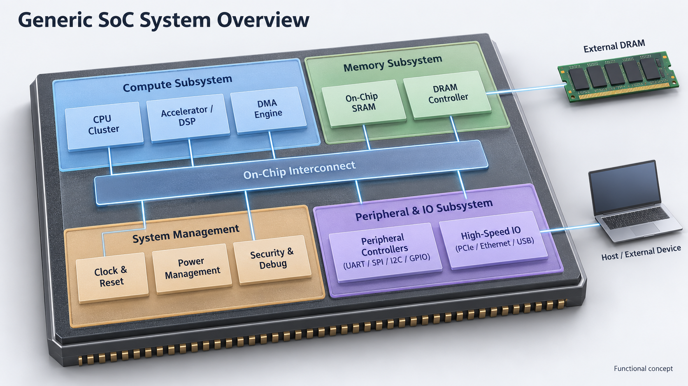
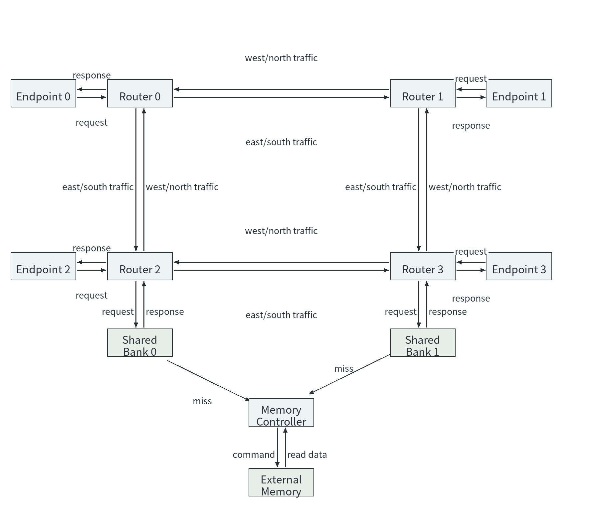
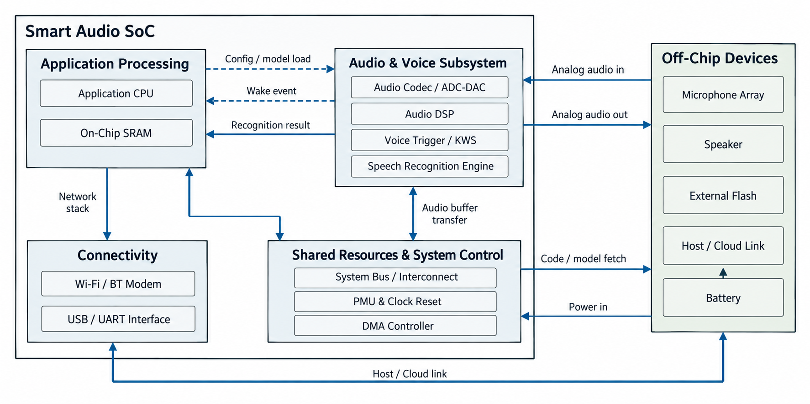
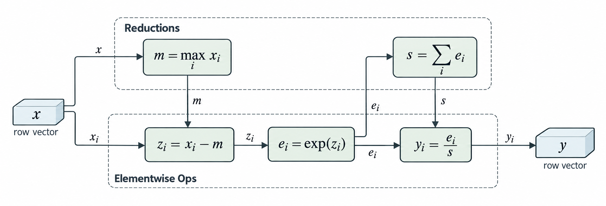
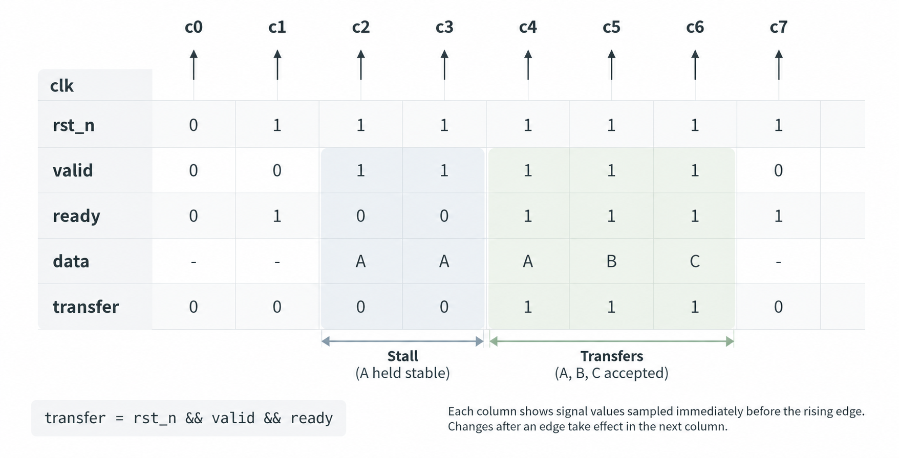
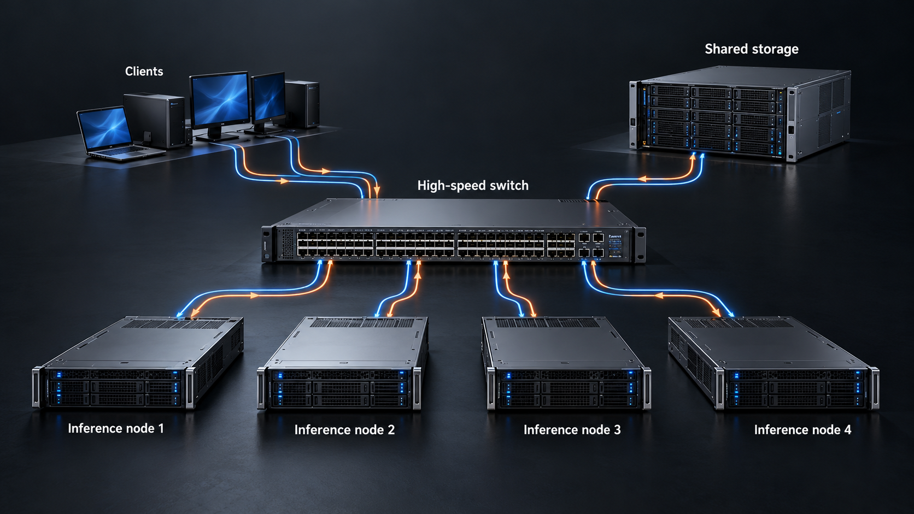
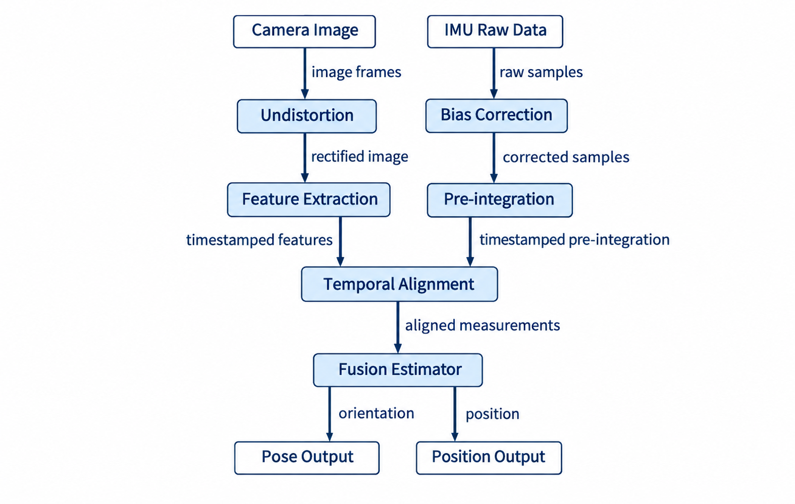
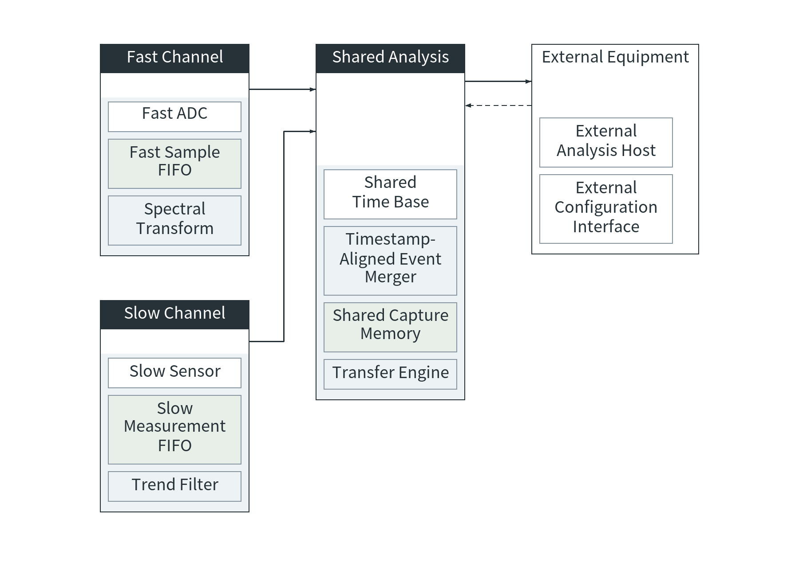
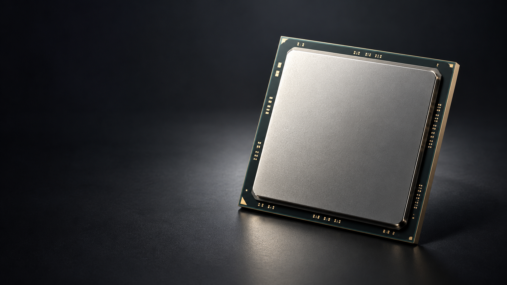
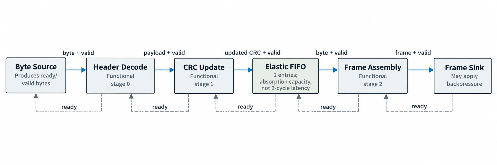
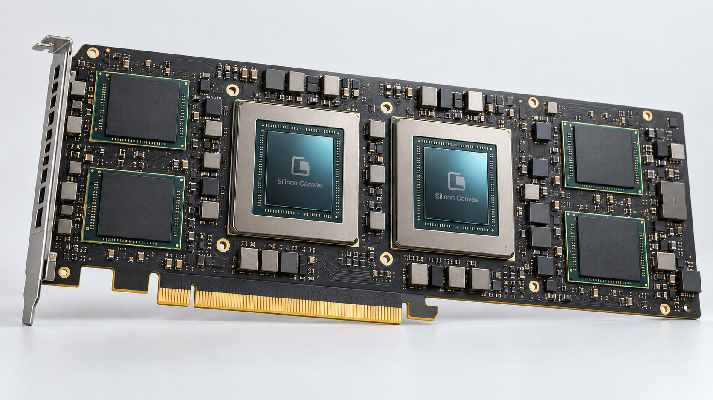
MODEL CONNECTION
用你选择的模型整理内容，为 Image Gen 生成提示词。
兼容 Chat Completions 与 JSON 输出，接口需允许浏览器跨域访问。
仅保留在本页内存，刷新后清除。
请求将从浏览器直接发送至 api.deepseek.com。